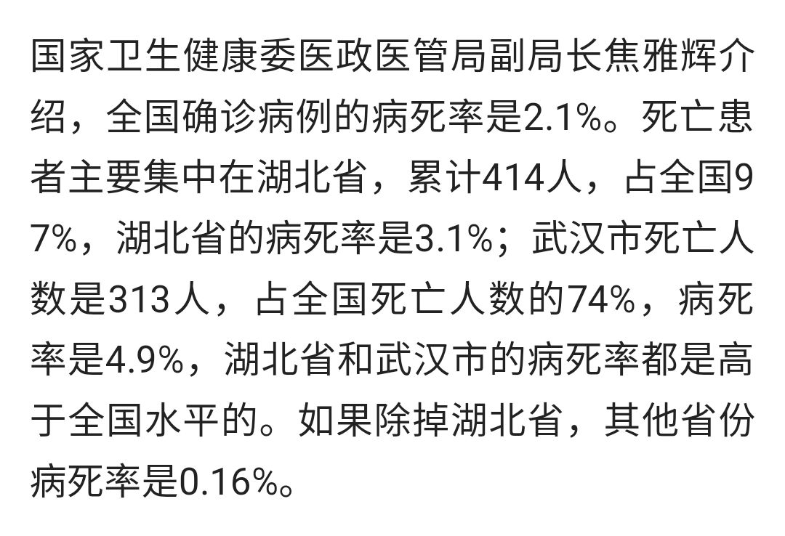
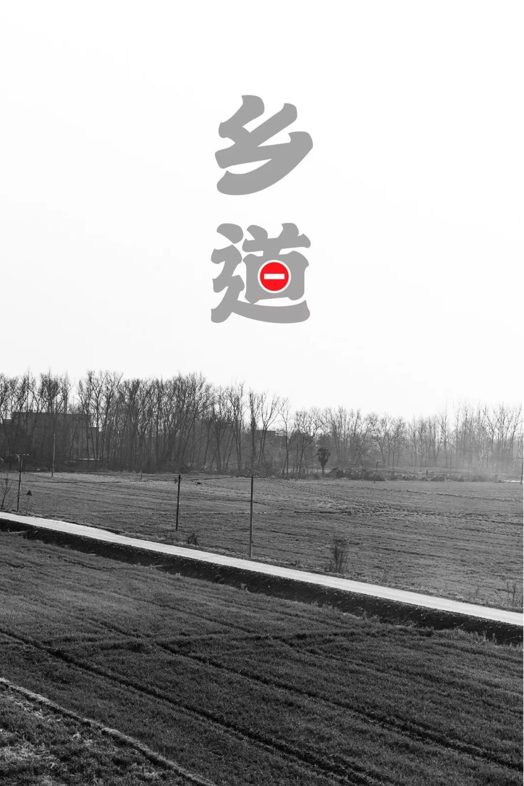
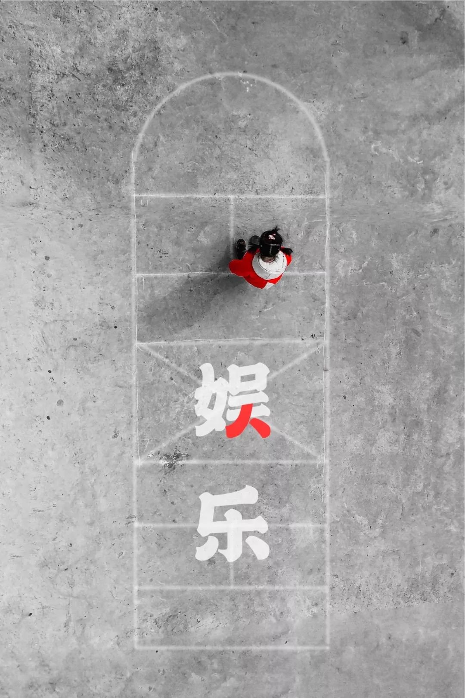

号外｜武汉封城后的24小时
原文链接 备份链接 本文由娱志The Review原创出品 华东师范大学传播学院学生娱评号 转载需申请授权 作者 | Moe，苏博 编辑 | 华实 导语 “自2020年1月23日10时起，全市城市公交、地铁、轮渡、长途客运暂停运营；无特殊 …
编者荐语：
马子本来计划春节出游，结果回来过个年，就因疫情封城动弹不得了。我俩见个面都难。天门疫情确实严峻，希望大家能多给予关注。瘟疫面前，命无贵贱，人人平等。

© 图文 阅路山
2020年2月4日
立春
武汉封城的第13天
天门封城的第12天
1. 确 诊
某日早晨，推开门，满屋阳光洒在长凳的玩具听诊器上，便记录下来。铺天盖地的疫情新闻，充斥在村头巷尾，就连家里的三岁小孩似乎也懂了，每日拿着玩具听诊器为家人检查。

新冠病毒的爆发地是武汉，而死亡率最高的城市，是在天门。截止2月4日15时，天门新冠状病毒确诊117例，死亡10例，治愈0例，死亡率高达8.5%。作为湖北最不起眼的城市，医疗条件差，关注度小，希望政府和媒体在关注武汉、黄冈等城市疫情的情况下，也关注下这个我深爱的家乡。

2. 空 城
对，我是从武汉回，也是在封城的前一天回，但逃离这个锅，我们不背，至少大部分人都背不起。因为，封城前，我们所知道的，只是政府想让我们知道的。
而在此之前，政府未下达任何形式的文件说明疫情的严重性，甚至年前几天，武汉正常工作日里，在地铁、商圈等场所，戴口罩的人数不到四分之一。原本与朋友约好的春节旅行也全部泡汤，退了所有火车票与预定酒店，将自己隔离在家。

3. 乡 道
勉强能错车的村道，往年春节之时，堵车率不低于一线城市，以至于我们常调侃道，把村口建个收费停车场……而现在，封道之后，除了每日的疫情广播车经过，安静得可怕！

4. 罩 顾
疫情发展迅速，也越来越严重，而口罩也是一罩难求。前年在北京上班时没用完的半袋口罩，这次用上了。期间，不少朋友要给我寄口罩和物资，全省都封了，更何况快递，早已停运……在此，谢谢大家的关心。
希望大家尽量别外出，保护好自己，就是保护好世界！

5. 余 粮
这张照片是年前的余粮，现已过去近半月。也不知道疫情什么时候会消失，家中的粮能撑到什么时候。农村不比城市，城市还有政府安排配送，或自行下单。而农村，封路之后，只靠仅有的“存粮”，一日三餐改为一日两餐，荤菜也减少……
你家中的余粮，还能撑多久？

6. 隔 离
本村一排房子，共10户，其中7户都是从武汉回，包括我。因为都是自驾，未乘任何公共交通，回村后基本自我隔离，全部已过潜伏期。但基本没有人戴口罩，不是不想戴，是根本买不到，药店关门，快递停运，道路封锁……好像，一切都只能靠运气！

7. 娱 乐
回来已半月，虽然大人们每日都生活在疫情的恐慌之下，但还是得为孩子们找些乐趣。从我们儿时的跳房子、放烟花、跳步到堆积木、读绘本，早起带孩子去田里接露水，自制手工……有人调侃道，疫情之下，“逼”成了好爸爸。

8. 分 享
孩子性格特开朗，有什么吃的玩的总喜欢和其他小朋友一起分享。时常想回到在武汉的户外时光，和她的好朋友一起……只是疫情越发严重之下，哪也去不了，有时也只能在楼顶玩耍……

9. 陪 伴
既然不能外出，那就在家多陪陪家人，陪陪孩子。以往繁忙的工作，让我对陪伴的日子格外珍惜，一有机会就会带着家人共享户外的美好时光。而现在，平安的待在一起，就是最好的陪伴。

10. 多 彩
童年，本该是多姿多彩。我希望，这纯真的笑容能更多的绽放在蓝天下，不被这层口罩所遮挡。
11. 加 油
在楼顶无意间看到，瓦屋顶的红瓦呈“+”和”U”，便拍了下来。几乎所有人都在给武汉加油，在这里我想给天门加油，希望有媒体关注到天门，能有医疗物资运过来，帮助天门，渡过难关。

12. 胜 利
我相信：明媚的阳光终会照亮这片土地，樱花会再次盛开，过早的人们依旧吃着热干面，街道会再次人声鼎沸，我们会摘下口罩，去自己想去的地方，去见想见的人。
为此，我们一起加油！
每一场传染病都是全人类的灾难，有人付之泪水、汗水甚至生命。湖北人自责过、愤怒过、感恩过、红过脖子、也红过眼眶，但至始至终，我们共同的敌人只有一个 —— 病毒。
历经生死考验，愿你我都能平安共度！
都 看 到 这 了
- 点 个
在 看
-
♡
长按二维码，关注我们
▼
往期精选
▼
原文链接 备份链接 本文由娱志The Review原创出品 华东师范大学传播学院学生娱评号 转载需申请授权 作者 | Moe，苏博 编辑 | 华实 导语 “自2020年1月23日10时起，全市城市公交、地铁、轮渡、长途客运暂停运营；无特殊 …
原文链接 备份链接 - 疫 情 之 下 - 只有在这样的特殊时刻，我们才体会到平平常常的日子是多么美好，多么幸福…… ” 疫情爆发得如此迅猛，让所有人始料未及。 己亥年腊月二十九，公历2020年1月23日，我去单位上年前最后一天班，那时我 …
原文链接 备份链接 1⁄7 *不为这座城市做点什么，最后，可能这座城市就完了……* 2020年1月30日 @雷锋小杨 坐标：武汉 大家就叫我雷锋小杨吧，我也不想留名。 我是武汉人，做酒店管理工作。我们的酒店在远城区，现在还在营 …
原文链接 备份链接 封城已过去一周，在这个谈武汉人、湖北人色变的时候，我们想要好好看一看他们。今天我们挑选的几篇读者来稿，围绕着湖北的武汉和黄冈，讲述他们在旋涡和风暴中心的日子。他们有些住在城市，有些住在乡村和小镇。环境的不同给了他们不 …
原文链接 备份链接 《战疫口述记》，是燃财经在新型冠状病毒肺炎期间推出的特别栏目，记录疫情亲历者的观察和感受。本文为第3篇，查看前2篇请点击《农村这样防肺炎》《我在武汉战肺炎》。 作者 | 苏琦 金玙璠 孟亚娜 唐亚华 孔明明 魏佳 …